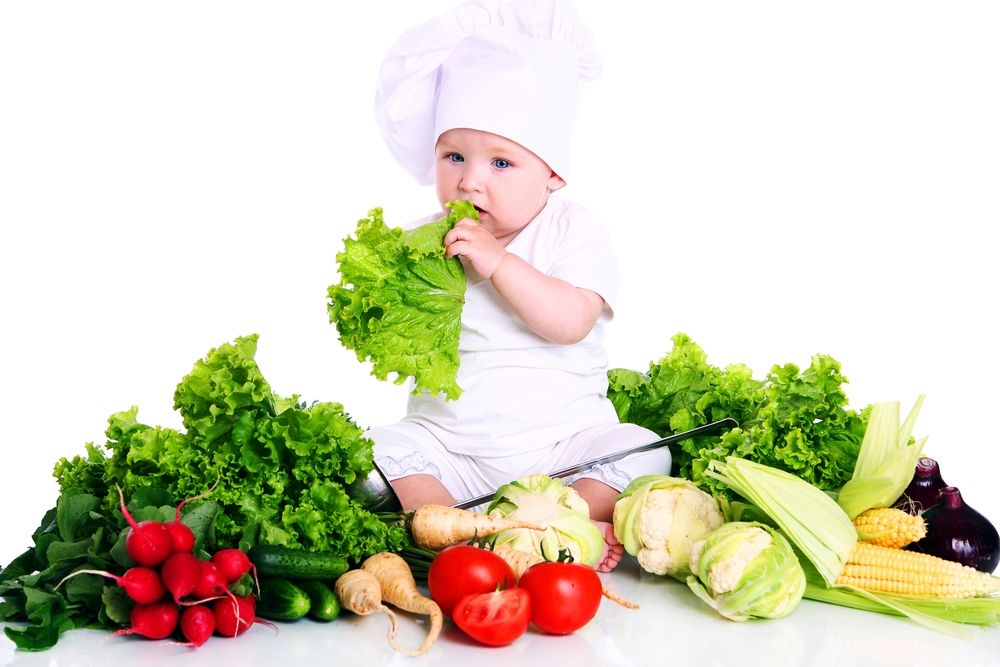

╔═══❖•ೋ° ПРИКОРМ °ೋ•❖═══╗
Перейшовши на цю тему зможете взнати про прикорм своїх малюків,
коли варто почати вводити прикорм, поради, рецепти та трекер прикорму.
Дуже важливо дивитись за харчуванням своєї малечі в такому віці,
так і в подальшому аби дитина набиралась сил, вітамінів для розвитку організму малюка.
『✦』Як зрозуміти коли варто вводити прикорм
Склад молока мами такий, що воно несе поживні речовини в достатній кількості.
Але після шести місяців їх вже може трошечки не вистачати.
І тому виникає питання додаткових речовин, питання прикорму.
Після 4 місяців травна система дитини вже готова сприймати інші продукти, ніж грудне молочко. З шести місяців дитина вже фізично готова до сприйняття іншої їжі.
Ознаки готовності дитини до прикорму:
• добре тримає голову • може сидіти у стільчику • відкриває рот на ложечку • ковтає їжу, а не випльовує її Основні помилки під час введення прикорму у дітей раннього віку
Однією з поширених помилок, якої припускаються батьки на етапі введення прикорму, є переконання, що з початком цього процесу можна або навіть потрібно припинити грудне вигодовування. Проте грудне молоко чи адаптована молочна суміш залишаються основними джерелами харчування для дитини впродовж першого року життя. Прикорм на даному етапі є лише додатковим аспектом раціону, хоча і вкрай важливим.
Другою розповсюдженою помилкою є недотримання рекомендованих термінів початку прикорму. Сучасні рекомендації передбачають, що оптимальним часом для запровадження прикорму є період між 17-им (початок п'ятого місяця) та 26-им тижнями життя (початок сьомого місяця). Ці часові рамки однакові для дітей на грудному та штучному вигодовуванні й стосуються також продуктів, які традиційно вважаються потенційно алергенними. Материнське молоко може повністю забезпечити основні потреби в поживних речовинах приблизно до шестимісячного віку дитини, однак після цього виникає необхідність введення додаткових продуктів харчування. Це, водночас, зовсім не означає, що грудне годування слід припиняти.
Час введення прикорму і його наслідки:
Варто також пам’ятати, що занадто раннє введення прикорму (до 17-го тижня) може підвищувати ризик розвитку харчової алергії, непереносимості певних продуктів, надмірної ваги та неправильної роботи травного тракту. Водночас надмірне відтермінування (після 26-го тижня) здатне призвести до дефіциту поживних речовин, виникнення анемії, ослаблення імунітету і порушення фізичного та психічного розвитку.
Третьою типовою помилкою є повне виключення з раціону таких потенційно алергенних продуктів, як яйця, м’ясо, риба, хліб або деякі каші. Численні дослідження демонструють, що поступове знайомство дитини з такими продуктами допомагає формувати харчову толерантність та знижує ризик розвитку алергій у майбутньому. Проте велику увагу слід приділяти обсягам: наприклад, двох варених яєць (жовток і білок) раз на тиждень цілком достатньо.
Четверта помилка полягає у страху давати дитині м’ясо. Варто пам’ятати, що це важливе джерело заліза, відсутність якого особливо критично позначається на дітях із низьким рівнем гемоглобіну. У таких випадках м’ясо можна вводити вже з 17-го тижня життя.
П’ята значна помилка – додавання солі чи цукру до страв прикорму для дитини першого року життя. Це не лише шкодить формуванню здорових смакових звичок, але й може підвищувати ризик розвитку метаболічних порушень у майбутньому.
Ще однією поширеною помилкою є годування немовляти до одного року цільним коров’ячим молоком. На цьому етапі харчування найкраще використовувати або грудне молоко, або спеціальні дитячі молочні суміші.
Особливості вибору продуктів для прикорму
Серед інших помилок варто виділити надмірне бажання якомога раніше запропонувати дитині свіжовичавлений фруктовий сік. Це може призвести до подразнення слизової оболонки травного тракту немовляти. Фруктовий сік рекомендовано вводити після року.
Ще однією частою прогалиною є неправильно обрана черговість продуктів прикорму
Після 4 місяців травна система дитини вже готова сприймати інші продукти, ніж грудне молочко. З шести місяців дитина вже фізично готова до сприйняття іншої їжі.
Ознаки готовності дитини до прикорму:
• добре тримає голову • може сидіти у стільчику • відкриває рот на ложечку • ковтає їжу, а не випльовує її Основні помилки під час введення прикорму у дітей раннього віку
Однією з поширених помилок, якої припускаються батьки на етапі введення прикорму, є переконання, що з початком цього процесу можна або навіть потрібно припинити грудне вигодовування. Проте грудне молоко чи адаптована молочна суміш залишаються основними джерелами харчування для дитини впродовж першого року життя. Прикорм на даному етапі є лише додатковим аспектом раціону, хоча і вкрай важливим.
Другою розповсюдженою помилкою є недотримання рекомендованих термінів початку прикорму. Сучасні рекомендації передбачають, що оптимальним часом для запровадження прикорму є період між 17-им (початок п'ятого місяця) та 26-им тижнями життя (початок сьомого місяця). Ці часові рамки однакові для дітей на грудному та штучному вигодовуванні й стосуються також продуктів, які традиційно вважаються потенційно алергенними. Материнське молоко може повністю забезпечити основні потреби в поживних речовинах приблизно до шестимісячного віку дитини, однак після цього виникає необхідність введення додаткових продуктів харчування. Це, водночас, зовсім не означає, що грудне годування слід припиняти.
Час введення прикорму і його наслідки:
Варто також пам’ятати, що занадто раннє введення прикорму (до 17-го тижня) може підвищувати ризик розвитку харчової алергії, непереносимості певних продуктів, надмірної ваги та неправильної роботи травного тракту. Водночас надмірне відтермінування (після 26-го тижня) здатне призвести до дефіциту поживних речовин, виникнення анемії, ослаблення імунітету і порушення фізичного та психічного розвитку.
Третьою типовою помилкою є повне виключення з раціону таких потенційно алергенних продуктів, як яйця, м’ясо, риба, хліб або деякі каші. Численні дослідження демонструють, що поступове знайомство дитини з такими продуктами допомагає формувати харчову толерантність та знижує ризик розвитку алергій у майбутньому. Проте велику увагу слід приділяти обсягам: наприклад, двох варених яєць (жовток і білок) раз на тиждень цілком достатньо.
Четверта помилка полягає у страху давати дитині м’ясо. Варто пам’ятати, що це важливе джерело заліза, відсутність якого особливо критично позначається на дітях із низьким рівнем гемоглобіну. У таких випадках м’ясо можна вводити вже з 17-го тижня життя.
П’ята значна помилка – додавання солі чи цукру до страв прикорму для дитини першого року життя. Це не лише шкодить формуванню здорових смакових звичок, але й може підвищувати ризик розвитку метаболічних порушень у майбутньому.
Ще однією поширеною помилкою є годування немовляти до одного року цільним коров’ячим молоком. На цьому етапі харчування найкраще використовувати або грудне молоко, або спеціальні дитячі молочні суміші.
Особливості вибору продуктів для прикорму
Серед інших помилок варто виділити надмірне бажання якомога раніше запропонувати дитині свіжовичавлений фруктовий сік. Це може призвести до подразнення слизової оболонки травного тракту немовляти. Фруктовий сік рекомендовано вводити після року.
Ще однією частою прогалиною є неправильно обрана черговість продуктів прикорму
『✦』Основні помилки батьків
• Не можна повністю припиняти грудне вигодовування після початку прикорму.
• Не варто вводити прикорм занадто рано або занадто пізно.
• Не потрібно уникати алергенних продуктів без причини.
• Не додавайте сіль та цукор у їжу дитини до року.
• Не давайте коров’яче молоко до 1 року.
• Нові продукти краще вводити поступово — один раз на 3 дні.
• Не потрібно одразу давати солодкі фруктові пюре.
• Давайте дитині воду після введення прикорму.
• Поступово змінюйте консистенцію їжі, щоб дитина вчилась жувати.
• Не варто вводити прикорм занадто рано або занадто пізно.
• Не потрібно уникати алергенних продуктів без причини.
• Не додавайте сіль та цукор у їжу дитини до року.
• Не давайте коров’яче молоко до 1 року.
• Нові продукти краще вводити поступово — один раз на 3 дні.
• Не потрібно одразу давати солодкі фруктові пюре.
• Давайте дитині воду після введення прикорму.
• Поступово змінюйте консистенцію їжі, щоб дитина вчилась жувати.
『✦』З чого почати?
Період введення прикорму є одним із ключових етапів у розвитку дитини. У цей час формується не лише смакові уподобання, а й основи харчової культури. Основним завданням батьків є не лише задоволення потреби в їжі, а й формування спокійного та безконфліктного ставлення дитини до нових продуктів.
Основи введення прикорму
Введення прикорму слід розпочати з простих, однокомпонентних продуктів, таких як овочі, каші або фрукти. Такі продукти вводять поступово, ретельно слідкуючи за реакцією організму дитини. Рекомендовано починати зі смаків, які є нейтральними для сприйняття: кабачок, броколі, цвітна капуста. Через кілька днів можна додавати інші продукти, такі як гарбуз чи морква, а згодом і каші, приготовлені на воді.
Процес адаптації до нових продуктів зазвичай триває від трьох до п’яти днів для кожного інгредієнта. З огляду на це, промислові дитячі пюре можуть виявитися зручнішими для початку, адже забезпечують контрольовану якість та сталість консистенції, що часом складно гарантувати при приготуванні їжі в домашніх умовах.
 Запобігання поширеним помилкам
Запобігання поширеним помилкам
Під час уведення прикорму варто уникати дій, які можуть ускладнити цей процес. Найпоширенішими помилками є:
1. Надмірний поспіх. Організму дитини потрібен час для адаптації до кожного нового продукту.
2. Примусове годування. Якщо дитина відмовляється їсти або проявляє втрату апетиту, не варто її змушувати.
3. Додавання солі чи цукру. У ранньому віці важливо підтримувати природний смак їжі.
4. Поєднання у страві кількох нових продуктів одночасно. Це може ускладнити визначення алергічних реакцій на окремий інгредієнт.
5. Невідповідність температури їжі. Надто гаряча або холодна їжа може спричинити негативну реакцію на прийом їжі.
Грамотно сплановане введення прикорму сприяє формуванню у малечі позитивних асоціацій із процесом вживання їжі без примусу чи стресу. Роль текстури, об’єму порцій та ритму На початковому етапі акцент робиться не так на об'ємі вживаної їжі, як на її сприйнятті дитиною. Перші порції — це радше знайомство зі смаками, ніж насичення. Починати можна з однієї чайної ложки, поступово збільшуючи кількість до половини баночки або повноцінної порції.
У перші місяці консистенція прикорму має бути однорідною та кремовою, без грудочок. З часом слід поступово переходити до текстури з дрібними частинками, а згодом — до м'яких шматочків їжі. Це не лише урізноманітнює раціон дитини, а й сприяє розвитку жувальних навичок та формуванню мовного апарату.
Новий смаковий досвід та його роль
Процес першого прикорму слід
Не знаєте, коли варто починати вводити тверду їжу в раціон дитини? Приблизно у віці 7–8 місяців можна поступово переходити на їжу невеликими шматочками. Прикорм шматочками, коли малюк їсть їжу руками, - чудовий спосіб ознайомитися з різноманітними смаками та текстурами у комфортному для нього темпі. Ось кілька порад, які допоможуть вашій дитині розпочати свої смачні перші пригоди. Для їжі руками намагайтеся готувати шматочки, які трохи виступатимуть із маленького кулачка дитини. Для першого прикорму обирайте продукти, що легко розчиняються у роті, щоб знизити ризик удушення. На початку уникайте надто твердих продуктів, таких як сира морква.
Спробуйте пропонувати малюкові різноманітну їжу, яку можна зручно їсти руками та яка відповідає його віковим потребам. Наприклад, це можуть бути м'які фрукти (свіжі або приготовані без додавання цукру), ніжні або варені овочі, продукти з вмістом крохмалю, такі як картопля, макарони, рис або локшина, а також м'ясо, риба без кісток і тверді сорти сиру.
Не варто хвилюватися, якщо малюк іноді давиться, коли починає їсти тверду їжу. Це не завжди означає удушення, тому важливо розуміти різницю між цими станами і знати, як діяти в кожній ситуації. Ризик удушення під час їжі руками не вищий, ніж при традиційному годуванні ложкою. У будь-якому випадку потрібно бути уважними та готовими до будь-яких несподіванок.
Завжди стежте за дитиною під час прийому їжі і ніколи не залишайте її саму.
Намагайтеся годувати малюка разом із сім'єю під час обіду — це дозволить йому відчувати себе залученим до спільного процесу та копіювати поведінку дорослих.
Будьте готові до можливого безладу. Деякі батьки кладуть водонепроникний килимок чи скатертину під дитячий стільчик, щоб полегшити прибирання. Заздалегідь дізнайтеся про корисні аксесуари для введення прикорму шматочками — вони можуть суттєво спростити цей процес.
Даючи дитині тверду їжу, дозволяйте їй проявляти ініціативу: досліджувати нову текстуру і смаки та насолоджуватися своїми маленькими відкриттями.
Основи введення прикорму
Введення прикорму слід розпочати з простих, однокомпонентних продуктів, таких як овочі, каші або фрукти. Такі продукти вводять поступово, ретельно слідкуючи за реакцією організму дитини. Рекомендовано починати зі смаків, які є нейтральними для сприйняття: кабачок, броколі, цвітна капуста. Через кілька днів можна додавати інші продукти, такі як гарбуз чи морква, а згодом і каші, приготовлені на воді.
Процес адаптації до нових продуктів зазвичай триває від трьох до п’яти днів для кожного інгредієнта. З огляду на це, промислові дитячі пюре можуть виявитися зручнішими для початку, адже забезпечують контрольовану якість та сталість консистенції, що часом складно гарантувати при приготуванні їжі в домашніх умовах.
Запобігання поширеним помилкам Під час уведення прикорму варто уникати дій, які можуть ускладнити цей процес. Найпоширенішими помилками є:
1. Надмірний поспіх. Організму дитини потрібен час для адаптації до кожного нового продукту.
2. Примусове годування. Якщо дитина відмовляється їсти або проявляє втрату апетиту, не варто її змушувати.
3. Додавання солі чи цукру. У ранньому віці важливо підтримувати природний смак їжі.
4. Поєднання у страві кількох нових продуктів одночасно. Це може ускладнити визначення алергічних реакцій на окремий інгредієнт.
5. Невідповідність температури їжі. Надто гаряча або холодна їжа може спричинити негативну реакцію на прийом їжі.
Грамотно сплановане введення прикорму сприяє формуванню у малечі позитивних асоціацій із процесом вживання їжі без примусу чи стресу. Роль текстури, об’єму порцій та ритму На початковому етапі акцент робиться не так на об'ємі вживаної їжі, як на її сприйнятті дитиною. Перші порції — це радше знайомство зі смаками, ніж насичення. Починати можна з однієї чайної ложки, поступово збільшуючи кількість до половини баночки або повноцінної порції.
У перші місяці консистенція прикорму має бути однорідною та кремовою, без грудочок. З часом слід поступово переходити до текстури з дрібними частинками, а згодом — до м'яких шматочків їжі. Це не лише урізноманітнює раціон дитини, а й сприяє розвитку жувальних навичок та формуванню мовного апарату.

При виборі готових пюре важливо звертати увагу на склад продукту: він не повинен містити солі, цукру, штучних ароматизаторів чи загусників, наприклад крохмалю. Крім того, рекомендовано обирати вироби з маркуванням вікової категорії та виготовлені з екологічно чистих інгредієнтів. Наприклад, платформи на кшталт ROZETKA дозволяють відфільтровувати дитячі пюре за різними критеріями — віком дитини, складом продукту чи виробником.Новий смаковий досвід та його роль
Процес першого прикорму слід
Не знаєте, коли варто починати вводити тверду їжу в раціон дитини? Приблизно у віці 7–8 місяців можна поступово переходити на їжу невеликими шматочками. Прикорм шматочками, коли малюк їсть їжу руками, - чудовий спосіб ознайомитися з різноманітними смаками та текстурами у комфортному для нього темпі. Ось кілька порад, які допоможуть вашій дитині розпочати свої смачні перші пригоди. Для їжі руками намагайтеся готувати шматочки, які трохи виступатимуть із маленького кулачка дитини. Для першого прикорму обирайте продукти, що легко розчиняються у роті, щоб знизити ризик удушення. На початку уникайте надто твердих продуктів, таких як сира морква.
Спробуйте пропонувати малюкові різноманітну їжу, яку можна зручно їсти руками та яка відповідає його віковим потребам. Наприклад, це можуть бути м'які фрукти (свіжі або приготовані без додавання цукру), ніжні або варені овочі, продукти з вмістом крохмалю, такі як картопля, макарони, рис або локшина, а також м'ясо, риба без кісток і тверді сорти сиру.
Не варто хвилюватися, якщо малюк іноді давиться, коли починає їсти тверду їжу. Це не завжди означає удушення, тому важливо розуміти різницю між цими станами і знати, як діяти в кожній ситуації. Ризик удушення під час їжі руками не вищий, ніж при традиційному годуванні ложкою. У будь-якому випадку потрібно бути уважними та готовими до будь-яких несподіванок.
Завжди стежте за дитиною під час прийому їжі і ніколи не залишайте її саму.
Намагайтеся годувати малюка разом із сім'єю під час обіду — це дозволить йому відчувати себе залученим до спільного процесу та копіювати поведінку дорослих.
Будьте готові до можливого безладу. Деякі батьки кладуть водонепроникний килимок чи скатертину під дитячий стільчик, щоб полегшити прибирання. Заздалегідь дізнайтеся про корисні аксесуари для введення прикорму шматочками — вони можуть суттєво спростити цей процес.
Даючи дитині тверду їжу, дозволяйте їй проявляти ініціативу: досліджувати нову текстуру і смаки та насолоджуватися своїми маленькими відкриттями.
4-6 місяць
Зазвичай у цьому віці, приблизно з 4 місяців, рекомендують починати з монокомпонентних пюре або каш. Вони мають бути безмолочними чи молочними, містити лише один інгредієнт та мати рідку консистенцію без грудочок — повністю однорідними. Серед перших продуктів, які рідко викликають алергічні реакції, варто обрати яблуко чи гарбуз. Наприклад, можна звернути увагу на молочну гречану кашу HIPP з пребіотиками, яка сприяє здоровому травленню. Для смачного перекусу або додатку до основного раціону добре підійдуть пюре для першого прикорму від бренду HIPP з яблуком чи гарбузом, які можна придбати в Mams.Family.4-6 місяць
Коли дитина вже освоїлася з базовими продуктами для першого прикорму, наступний етап може включати дитячі каші, що поєднують кілька видів круп або злакових культур, а також багатокомпонентні овочеві й фруктові пюре. У цьому віці травна система малюка зазвичай готова до засвоєння таких продуктів, як йогурти, зернові культури та білки. Консистенція їжі на цьому етапі може бути густішою порівняно з попереднім періодом. Діти починають віддавати перевагу стравам з різноманітними смаковими особливостями. Одним із таких цікавих варіантів є суха молочна швидкорозчинна пшенично-вівсяна каша з чорносливом від виробника GERBER. Для розширення раціону рекомендується спробувати пюре бренду Hamanek з ягням, морквою та картопляним пюре як основу обіду. Доповнити прийом їжі можна корисним і смачним десертом на основі груші сорту Вільямс від бренду Gerber.6+ місяць
Коли малюк вже освоїв основи першого прикорму, настав час розширити його меню цікавими смаками та корисними стравами. У цьому періоді можна вводити дитячі каші, які поєднують декілька видів круп або злакових, а також багатокомпонентні овочеві та фруктові пюре. Організм дитини стає достатньо зрілим для засвоєння йогурту, зернових продуктів і білків. Консистенція їжі тепер може бути трохи густішою, ніж раніше, що дає малюкові новий досвід у процесі харчування. У цьому віці дітям часто подобаються страви із різноманітними смаковими комбінаціями. Одним із чудових варіантів для прикорму може стати суха молочна швидкорозчинна каша пшенично-вівсяна з чорносливом від бренду GERBER. Її ніжний смак та багатий склад забезпечують організму необхідні нутрієнти. Ще одним варіантом є смачна і поживна страва Hamanek – пюре "Ягня з морквою і картоплею", яке стане чудовим вибором для обіду. А в якості десерту або легкого перекусу після основної їжі можна запропонувати малюкові фруктове пюре Gerber із груші сорту Вільямс – ніжне, ароматне і дуже корисне для маленького гурмана.9+ місяць
У цьому віці дитина розвиває навички самостійного жування та ковтання їжі, що обґрунтовує необхідність у раціоні страв із м'якою текстурою, доповненою невеликими шматочками для стимуляції процесу навчання. Матерям рекомендується звернути увагу на спеціалізоване дитяче харчування, зокрема пюре від бренду Gerber "Яловичина по-домашньому з морквою" або м'ясо-овочевий варіант від HiPP "Кролик з рисом та броколі". Як першу страву чудовим вибором може стати дитячий крем-суп МАМАКО на основі шпинату та козиного молока, адже він є не лише легко засвоюваним, а й поживним і збалансованим.11+ місяць
Пальчикова їжа для дітей віком від 10 місяців виконує важливу роль у розвитку дитини, сприяючи формуванню тактильних навичок і координації. Така їжа повинна мати м'яку, але водночас достатньо пружну консистенцію, щоб малюк легко утримував її в руках і самостійно пробував клали в рот. Найбільш практичним рішенням у забезпеченні таких потреб може стати придбання спеціалізованих продуктів дитячого харчування, які адаптовані до вікових особливостей.Зокрема, значною популярністю користуються каші бренду Fleur Alpine ORGANIC - молочні “Пшенично-вівсяна зі шматочками банану та яблука” або “Пшенично-вівсяна зі шматочками груші та яблука”. Ці продукти не лише вирізняються багатством смакових властивостей, а й містять корисні додатки для оптимального розвитку малюка. Корисним доповненням раціону також стане дитяче пюре Gerber “Ласощі по-італійськи”, що забезпечує необхідні поживні речовини для росту дитини.
Окрему увагу слід приділити поступовому процесу відлучення дитини від грудного вигодовування. Дотримання кількох ключових рекомендацій допоможе зробити цей перехід менш стресовим як для малюка, так і для матері:
1. Послідовно зменшувати кількість годувань, які дитина отримує не через потребу у їжі, а через звичку або як спосіб розваги. Часто грудне вигодовування стає для дітей засобом заспокоєння або заняттям від нудьги.
2. Виключити практику годування перед засинанням. Це сприятиме тому, щоб малюк почав розвивати власні стратегії засинання.
3. Створювати умови для самостійного засинання, поступово знижуючи залежність малюка від фізичного контакту з матір’ю під час години сну.
Дотримання цих порад сприятиме плавному переходу до нового етапу розвитку дитини, забезпечуючи при цьому емоційний комфорт і гармонію в її житті.
『✦』Алергени
Алергічна реакція у дитини, як і у дорослого, виникає у відповідь на помилкове сприйняття організмом певної речовини як небезпечної. Фактично це захисна реакція на уявну загрозу.
Дитяча алергія проявляється різноманітними симптомами, серед яких найпоширенішими є екзема, висипання (плями, які можуть злущуватися, мокнути або бути сухими, а також себорейні кірки на голові немовляти), розлади травлення (метеоризм, коліки, пронос або закрепи) та дихальні труднощі (астматичний бронхіт, бронхіальна астма). До групи ризику потрапляють діти, у яких в сімейному анамнезі є випадки алергічних реакцій у батьків або братів/сестер. Наприклад, якщо один із батьків має харчову алергію, імовірність її виникнення у дитини становить 20–40%. У разі наявності алергії в обох батьків ризик зростає до 60–80%. При цьому спадковою є не конкретна алергія, а лише схильність до подібних станів.
Формування імунної системи дитини починається ще в утробі матері, а протягом першого року життя вона активно дозріває, пристосовуючись до довкілля, вчиться розпізнавати сторонні чинники й захищатися від них. Остаточне становлення імунітету триває до 15–16 років, однак саме перший рік життя вважається найважливішим і найкритичнішим періодом.
Основним джерелом чужорідних білків та потенційних алергенів для малюка є їжа. Особливу загрозу становить раннє введення в раціон звичайних молочних продуктів із коров’ячого молока, особливо цільного. Алергія до білка коров’ячого молока у немовлят може розвиватися стрімко й іноді спричиняти тяжкі або навіть загрозливі для життя стани.
Для здорового розвитку імунної системи дитини дуже важливу роль відіграє формування нормальної мікрофлори кишечника. Зокрема, необхідна своєчасна поява в кишківнику корисних бактерій: спочатку біфідобактерій, а трохи пізніше – лактобактерій. Нормальна мікрофлора сприяє правильному засвоєнню їжі клітинами слизової оболонки кишечника та допомагає знизити ймовірність алергічних реакцій на чужорідні білки.
Грудне вигодовування є важливим фактором захисту новонародженого від інфекцій і харчових алергій навіть за наявності сімейної схильності. Разом із молоком матері дитина пасивно отримує антитіла та інші захисні фактори. Крім того, грудне молоко містить невелику кількість білків із раціону матері, що поступово готує організм малюка до майбутнього сприйняття цих продуктів.
Відомо, що легше запобігти хворобі, ніж згодом її лікувати. Помилки в харчуванні дітей, які мають схильність до алергії, часто починаються вже з моменту народження. На початку мама може мати небагато молока, але воно має особливий склад, створений природою для новонароджених. Цей початковий, високопоживний продукт називається молозивом і пізніше заміщається грудним молоком. У перші 3-4 дні життя немовляти невелика кількість молозива є звичайним явищем, тому додаткове годування спеціальними дитячими сумішами не потрібне. Часто новонароджені можуть бути неспокійними, і штучне харчування може заспокоїти їх, але це створює хибне відчуття благополуччя. Таке прагнення «нагодувати та заспокоїти» протирічить законам природи і може бути шкідливим для малюків зі схильністю до алергії. Використання сумішей на основі білка коров'ячого молока відразу після народження може значно підвищити ризик розвитку харчової алергії. Тому перше правило: не годуй дитину, яка схильна до алергії, звичайними молочними продуктами, а за потреби використовуй лише спеціальні гіпоалергенні дитячі суміші з доведеним профілактичним ефектом
Гіпоалергенність означає, що суміш сприяє попередженню харчової алергії у дітей. У процесі виготовлення таких продуктів білок у складі суміші розщеплюється (гідролізується). Гіпоалергенні суміші поділяють на помірно гідролізовані та високогідролізовані залежно від ступеня розщеплення білка. Високогідролізовані суміші майже не містять білків, які можуть викликати алергію, та використовуються в основному для лікування вже наявних алергічних реакцій. Їх не слід застосовувати без контролю лікаря. Якщо алергія вже виникла, необхідно звернутися до лікаря для підбору відповідного лікування та рекомендацій щодо харчування.
Помірно гідролізовані продукти містять частково розщеплений білок коров'ячого молока, який менш ймовірно викликає алергію. Вони також впливають на імунну систему, формуючи толерантність до білка коров'ячого молока, що означає нормальну переносимість без алергічних проявів. Ці суміші мають позначення HA (від hypоallergenic – гіпоалергенний) і попереджають розвиток алергії на суміш, сприяючи звиканню до білка молока.
Друге правило: якомога довше годуй дитину грудьми, хоча б до шести місяців. У цей період мамі варто обмежити споживання яєць, молока та молочних продуктів, риби й морепродуктів, курячого м'яса та бобових. Замість повного виключення цих продуктів краще вживати їх не щодня і в помірній кількості. Також варто уникати тривалозберігаючих продуктів із барвниками, спеціями та добавками.
Важливо не вводити прикорм (каші, овочеве пюре, сир) до чотирьох місяців. У цей час годуй лише грудним молоком або гіпоалергенною сумішшю при його нестачі та схильності дитини до алергії. Після шостого місяця раціон можна поступово розширювати, проте цільне молоко (коров'яче або козяче), кефір та інші молочні продукти слід уникати до року; яйця, рибу та морепродукти
Дитяча алергія проявляється різноманітними симптомами, серед яких найпоширенішими є екзема, висипання (плями, які можуть злущуватися, мокнути або бути сухими, а також себорейні кірки на голові немовляти), розлади травлення (метеоризм, коліки, пронос або закрепи) та дихальні труднощі (астматичний бронхіт, бронхіальна астма). До групи ризику потрапляють діти, у яких в сімейному анамнезі є випадки алергічних реакцій у батьків або братів/сестер. Наприклад, якщо один із батьків має харчову алергію, імовірність її виникнення у дитини становить 20–40%. У разі наявності алергії в обох батьків ризик зростає до 60–80%. При цьому спадковою є не конкретна алергія, а лише схильність до подібних станів.
Формування імунної системи дитини починається ще в утробі матері, а протягом першого року життя вона активно дозріває, пристосовуючись до довкілля, вчиться розпізнавати сторонні чинники й захищатися від них. Остаточне становлення імунітету триває до 15–16 років, однак саме перший рік життя вважається найважливішим і найкритичнішим періодом.
Основним джерелом чужорідних білків та потенційних алергенів для малюка є їжа. Особливу загрозу становить раннє введення в раціон звичайних молочних продуктів із коров’ячого молока, особливо цільного. Алергія до білка коров’ячого молока у немовлят може розвиватися стрімко й іноді спричиняти тяжкі або навіть загрозливі для життя стани.
Для здорового розвитку імунної системи дитини дуже важливу роль відіграє формування нормальної мікрофлори кишечника. Зокрема, необхідна своєчасна поява в кишківнику корисних бактерій: спочатку біфідобактерій, а трохи пізніше – лактобактерій. Нормальна мікрофлора сприяє правильному засвоєнню їжі клітинами слизової оболонки кишечника та допомагає знизити ймовірність алергічних реакцій на чужорідні білки.
Грудне вигодовування є важливим фактором захисту новонародженого від інфекцій і харчових алергій навіть за наявності сімейної схильності. Разом із молоком матері дитина пасивно отримує антитіла та інші захисні фактори. Крім того, грудне молоко містить невелику кількість білків із раціону матері, що поступово готує організм малюка до майбутнього сприйняття цих продуктів.
Профілактика харчової алергії
Відомо, що легше запобігти хворобі, ніж згодом її лікувати. Помилки в харчуванні дітей, які мають схильність до алергії, часто починаються вже з моменту народження. На початку мама може мати небагато молока, але воно має особливий склад, створений природою для новонароджених. Цей початковий, високопоживний продукт називається молозивом і пізніше заміщається грудним молоком. У перші 3-4 дні життя немовляти невелика кількість молозива є звичайним явищем, тому додаткове годування спеціальними дитячими сумішами не потрібне. Часто новонароджені можуть бути неспокійними, і штучне харчування може заспокоїти їх, але це створює хибне відчуття благополуччя. Таке прагнення «нагодувати та заспокоїти» протирічить законам природи і може бути шкідливим для малюків зі схильністю до алергії. Використання сумішей на основі білка коров'ячого молока відразу після народження може значно підвищити ризик розвитку харчової алергії. Тому перше правило: не годуй дитину, яка схильна до алергії, звичайними молочними продуктами, а за потреби використовуй лише спеціальні гіпоалергенні дитячі суміші з доведеним профілактичним ефектом
Гіпоалергенність означає, що суміш сприяє попередженню харчової алергії у дітей. У процесі виготовлення таких продуктів білок у складі суміші розщеплюється (гідролізується). Гіпоалергенні суміші поділяють на помірно гідролізовані та високогідролізовані залежно від ступеня розщеплення білка. Високогідролізовані суміші майже не містять білків, які можуть викликати алергію, та використовуються в основному для лікування вже наявних алергічних реакцій. Їх не слід застосовувати без контролю лікаря. Якщо алергія вже виникла, необхідно звернутися до лікаря для підбору відповідного лікування та рекомендацій щодо харчування.
Помірно гідролізовані продукти містять частково розщеплений білок коров'ячого молока, який менш ймовірно викликає алергію. Вони також впливають на імунну систему, формуючи толерантність до білка коров'ячого молока, що означає нормальну переносимість без алергічних проявів. Ці суміші мають позначення HA (від hypоallergenic – гіпоалергенний) і попереджають розвиток алергії на суміш, сприяючи звиканню до білка молока.
Друге правило: якомога довше годуй дитину грудьми, хоча б до шести місяців. У цей період мамі варто обмежити споживання яєць, молока та молочних продуктів, риби й морепродуктів, курячого м'яса та бобових. Замість повного виключення цих продуктів краще вживати їх не щодня і в помірній кількості. Також варто уникати тривалозберігаючих продуктів із барвниками, спеціями та добавками.
Важливо не вводити прикорм (каші, овочеве пюре, сир) до чотирьох місяців. У цей час годуй лише грудним молоком або гіпоалергенною сумішшю при його нестачі та схильності дитини до алергії. Після шостого місяця раціон можна поступово розширювати, проте цільне молоко (коров'яче або козяче), кефір та інші молочні продукти слід уникати до року; яйця, рибу та морепродукти